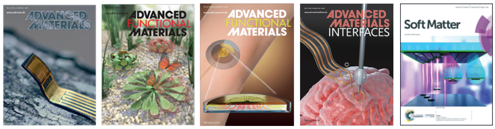

- Chengjun Wang, Weijie Hong, Yidong Deng, Lingyi Lan, Shun Zhang, Jianfeng Ping, Yibin Ying, Cunjiang Yu, Jikui Luo*, Weiqiu Chen*, Zuobin Chen*, Jizhou Song*. Wireless Wrist-Worn Ultra-conformal Neuromuscular Interfaces for Thumb-Controlled Immersive Human-Machine Interactions. Submitted
- Suhao Wang, Qianqian Jiang, Hang Liu, Chaonan Yu, Pengxian Li, Kedi Xu, Rui Xiao, Yaoyao Hao*, Chengjun Wang*, Jizhou Song*. Mechanically Adaptive and Deployable Intracortical Probes Enable Long-Term Neural Electrophysiological Recordings. Under Revisions
- Yuchen Miao†, Zhenyin Fu†, Juhong Zhang†, Yuhang Tao†, Kai Pang, Chengjun Wang, Qianqian Jiang, Liyin Shen, Tian Xia, Peixuan Lu, Zhen Xu, Ling Xia, Lijian Zuo, Jizhou Song*, Changyou Gao, Dongdong Deng*, Ruhong Jiang*, Yang Zhu*. Potential Clinical Value and Influence of Conductivity in Conductive Cardiac Patches for Reducing Post-MI Arrythmia Risks. Submitted
- Shuchang He, Chengjun Wang*, Jie Tao, Haishan Tang, Zuojia Wang, Jizhou Song. A Kirigami-Based Reconfigurable Metasurface for Selective Electromagnetic Transmission Modulation. npj Flexible Electronics 8.1 (2024).
- Yidong Deng, Chengjun Wang*, Tong Qiu, Jiafeng Ni, Weipeng Xuan*, Jinkai Chen, Hao Jin, Shurong Dong, Shudong Xia, Jikui Luo*. Large-Area Stretchable Dynamic 18-lead ECG Monitoring Patch Integrated with Deep Learning for Cardiovascular Disease Diagnosis. Cell Reports Physical Science 5.7 (2024).
- Shuchang He, Chengjun Wang*, Jie Tao, Haishan Tang, Zuojia Wang, Jizhou Song. Strain-Induced Electromagnetic Transmission Modulation via a Reconfigurable Kirigami Metasurface, International Journal of Applied Mechanics (2024).
- Lingyi Lan, Jianfeng Ping, Huiyan Li, Chengjun Wang, Guang Li, Jizhou Song, Yibin Ying*. Skin-Inspired All-Natural Biogel for Bioadhesive Interface. Advanced Materials 202401151 (2024).
- Suhao Wang†, Lixuan Li†, Shun Zhang†, Qianqian Jiang, Pengxian Li, Chengjun Wang, Rui Xiao, Xiaoming Li*, Jizhou Song*. Multifunctional Ultraflexible Neural Probe for Wireless Optogenetics and Electrophysiology. Gaint 18, 100272 (2024).
- Guorui Li*, Tuck-Whye Wong, Benjamin Shih, Chunyu Guo, Luwen Wang, Jiaqi Liu, Tao Wang, Xiaobo Liu, Jiayao Yan, Baosheng Wu, Fajun Yu, Yunsai Chen, Yiming Liang, Yaoting Xue, Chengjun Wang, Shunping He, Li Wen, Michael T Tolley, A-Man Zhang, Cecilia Laschi, Tiefeng Li*. Bioinspired Soft Robots for Deep-Sea Exploration. Nature Communications 14.1 (2023): 7097.
- Xinlin Xu, Shuchang He, Chengjun Wang*, Xuan Chen, Zuojia Wang, Jizhou Song*. Origami-Inspired Chiral Metamaterials with Tunable Circular Dichroism Through Mechanically Guided Three-Dimensional Assembly. Journal of Applied Mechanics90.1 (2023): 011007.
- Ye Qiu†, Chengjun Wang†, Xiaoyan Lu†, Huaping Wu*, Xiaolong Ma, Jiahui Hu, Hangcheng Qi, Ye Tian, Zheng Zhang, Guanjun Bao, Hao Chai, Jizhou Song*, Aiping Liu*. A Biomimetic Drosera Capensis with Adaptive Decision-Predation Behavior Based on Multifunctional Sensing and Fast Actuating Capability. Advanced Functional Materials, 2022, 32(13): 2110296.
- Min Cai†, Weijie Hong†, Shuang Nie, Chengjun Wang, Jizhou Song*. Stretchable Electronic Skin Patch with Strain Isolation for the Simultaneous Measurements of Surface Electromyography and Temperature. Flexible and Printed Electronics 7.3 (2022): 035002.
- Chengjun Wang†, Min Cai†, Zengming Hao, Shuang Nie, Changying Liu, Hongen Du, Jian Wang, Weiqiu Chen, Jizhou Song*. Stretchable, Multifunctional Epidermal Sensor Patch for Surface Electromyography and Strain Measurements. Advanced Intelligent Systems, 2021, 2100031.
- Min Cai, Zhongdong Jiao, Shuang Nie, Chengjun Wang, Jun Zou, Jizhou Song*. A Multifunctional Electronic Skin Based on Patterned Metal Films for Tactile Sensing with a Broad Linear Response Range. Science Advances 7.52 (2021): eabl8313.
- Hongyu Luo, Suhao Wang, Chengjun Wang, Changhong Linghu, Jizhou Song*. Thermal Controlled Tunable Adhesive for Deterministic Assembly by Transfer Printing. Advanced Functional Materials 31.16 (2021): 2010297.
- Shun Zhang, Chengjun Wang, Changhong Linghu, Suhao Wang, Jizhou Song*. Mechanics Strategies for Implantation of Flexible Neural Probes. Journal of Applied Mechanics 88.1 (2021): 010801.
- Chengjun Wang, Changhong Linghu, Shuang Nie, Chenglong Li, Qianjin Lei, Xiang Tao, Yinjia Zeng, Yipu Du, Shun Zhang, Kaixin Yu, Hao Jin, Weiqiu Chen, Jizhou Song*. Programmable and Scalable Transfer Printing with High Reliability and Efficiency for Flexible Inorganic Electronics. Science Advances, 2020, 6(25): eabb2393.
- Hongyu Luo, Chengjun Wang, Changhong Linghu, Kaixin Yu, Chao Wang, Jizhou Song*. Laser-Driven Programmable Non-Contact Transfer Printing of Objects onto Arbitrary Receivers via an Active Elastomeric Microstructured Stamp. National Science Review 7.2 (2020): 296-304.
- Changhong Linghu, Shun Zhang, Chengjun Wang, Kaixin Yu, Chenglong Li, Yinjia Zeng, Haodong Zhu, Xiaohui Jin, Zhenyu You, Jizhou Song*. Universal SMP Gripper with Massive and Selective Capabilities for Multiscaled, Arbitrarily Shaped Objects. Science Advances 6.7 (2020): eaay5120.
- Chengjun Wang, Shun Zhang, Shuang Nie, Yipin Su, Weiqiu Chen*, Jizhou Song*. Buckling of a Stiff Thin Film on a Bi-layer Compliant Substrate of Finite Thickness. International Journal of Solids and Structures, 2020, 188: 133-140.
- Shun Zhang†, Chengjun Wang†, Huan Gao†, Chaonan Yu, Qinghao Yan, Yuchen Lu, Zhehao Tao, Changhong Linghu, Zhou Chen, Kedi Xu*, Jizhou Song*. A Removable Insertion Shuttle for Ultraflexible Neural Probe Implantation with Stable Chronic Brain Electrophysiological Recording. Advanced Materials Interfaces, 2020, 7(6): 1901775.
- Shuang Nie†, Min Cai†, Chengjun Wang, Jizhou Song*. Fatigue Life Prediction of Serpentine Interconnects on Soft Elastomers for Stretchable Electronics. Journal of Applied Mechanics 87.1 (2020): 011011.
- Yingli Shi†, Chengjun Wang†, Yafei Yin, Yuhang Li*, Yufeng Xing, Jizhou Song*. Functional Soft Composites as Thermal Protecting Substrates for Wearable Electronics. Advanced Functional Materials, 2019, 29(45): 1905470.
- Min Cai†, Shuang Nie†, Yipu Du†, Chengjun Wang, Jizhou Song*. Soft Elastomers with Programmable Stiffness as Strain-Isolating Substrates for Stretchable Electronics. ACS Applied Materials & Interfaces 11.15 (2019): 14340-14346.
- Shun Zhang, Chengjun Wang, Shuang Nie, Jianliang Xiao, Jizhou Song*. Wrinkling of Silicon Nanoribbons on Shape Memory Polymers. Journal of Physics D: Applied Physics 52.26 (2019): 265101.
- Changhong Linghu, Chengjun Wang, Nuo Cen, Jiaming Wu, Zhengfeng Lai, Jizhou Song*. Rapidly Tunable and Highly Reversible Bio-inspired Dry Adhesion for Transfer Printing in Air and a Vacuum. Soft Matter 15.1 (2019): 30-37.
- Yun Cui, Yafei Yin, Chengjun Wang, Kyoseung Sim, Yuhang Li*, Cunjiang Yu*, Jizhou Song*. Transient Thermo-Mechanical Analysis for Bimorph Soft Robot Based on Thermally Responsive Liquid Crystal Elastomers. Applied Mathematics and Mechanics 40.7 (2019): 943-952.
- Chengjun Wang†, Kyoseung Sim†, Jin Chen, Zhoulyu Rao, Yuhang Li, Weiqiu Chen, Jizhou Song, Cunjiang Yu*. Soft Ultrathin Electronics Innervated Adaptive Fully Soft Robots. Advanced Materials 2018, 30(13): 1706695.
- Changhong Linghu, Shun Zhang, Chengjun Wang, Jizhou Song*. Transfer Printing Techniques for Flexible and Stretchable Inorganic Electronics. npj Flexible Electronics 2.1 (2018): 26.
- Yun Cui, Chengjun Wang, Kyoseung Sim, Jin Chen, Yuhang Li*, Yufeng Xing, Cunjiang Yu*, Jizhou Song*. A Simple Analytical Thermo-Mechanical Model for Liquid Crystal Elastomer Bilayer Structures. AIP Advances 8.2 (2018).
- Tengfei Shi, Chengjun Wang, Chang Liu, Yan Liu, Youheng Dong, Xiangyu Li*. Axisymmetric Thermo-Elastic Field in an Annular Plate of Functionally Graded Multiferroic Composites Subjected to Uniform Thermal Loadings. Smart Materials and Structures 25.3 (2016): 035029.
- Xiangyu Li*, Youheng Dong, Chang Liu, Yan Liu, Chengjun Wang, Tengfei Shi. Axisymmetric Thermo-Magneto-Electro-Elastic Field in a Heterogeneous Circular Plate Subjected to a Uniform Thermal Load. International Journal of Mechanical Sciences 88 (2014): 71-81.
2014